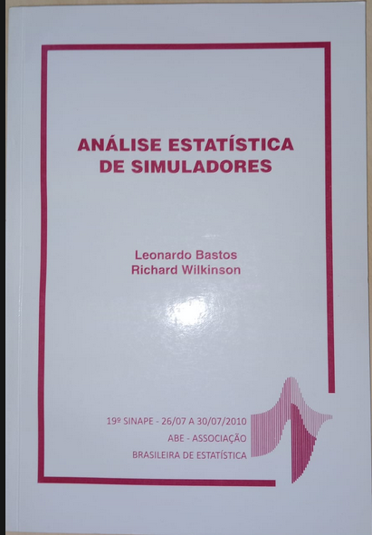

Publications
- Lattes CV: lattes.cnpq.br/5241799121437269 (The most important academical CV in Brazil)
- Google Scholar ID: A5VmZYMAAAAJ (Useful for h-index and citations)
- Orcid: 0000-0002-1406-0122 (an international standardized CV)
- Scopus: 55648716900 (another international standardized CV)
- PUBMED: query result for Leonardo Bastos* (An important source for public health papers)
Most of my publications are freely available (links provived). If there is one which you cannot download because of a paywall, drop me an email and I can send you the pdf.
Papers
BARRENECHEA, GUILLERMO G. ; SANCHEZ, R. ; BASTOS, LEONARDO S.. Impact of single-dose varicella vaccination in Argentina, by province: a time series study. Archivos Argentinos de Pediatria, v. 123, p. e202410412, 2025. PUBMED
BRADY, OLIVER J ; BASTOS, LEONARDO S.; CALDWELL, J. M. ; CAUCHEMEZ, S. ; CLAPHAM, H. E. ; DORIGATTI, I. ; GAYTHORPE, K. A. M. ; HU, W. ; HUSSAIN-ALKHATEEB, L. ; JOHANSSON, M. A. ; LIM, A. ; LOPEZ, V. ; MAUDE, R. J. ; MESSINA, J. P. ; MORDECAI, E. A. ; PETERSON, A. T. ; RODRIQUEZ-BARRAQUE, I. ; RABE, I. B. ; ROJAS, D. P. ; RYAN, S. J. ; et.al . Why the growth of arboviral diseases necessitates a new generation of global risk maps and future projections. PLOS COMPUTATIONAL BIOLOGY (ONLINE), v. 21, p. e1012771, 2025. [PUBMED] (https://pubmed.ncbi.nlm.nih.gov/40184562/)
ALVES, ARTHUR DANIEL ROCHA ; MAGALDI, MARIANA ; DE MENEZES, ANA CAROLINA SATHLER ; FRANÇA LOPES, JOSIANE IOLE ; DA COSTA SILVA, CARLOS ALEXANDRE ; DE OLIVEIRA, JAQUELINE MENDES ; MATTOS, CAMILA ; BASTOS, LEONARDO S. ; AMORIM FILHO, LUIZ DE MELO ; PINTO, MARCELO ALVES ; AMADO, LUCIANE ALMEIDA . Incidence and estimated risk of residual transmission of hepatitis a virus and parvovirus B19 by blood transfusion in the state of Rio De Janeiro - Brazil: a retrospective study. Virology Journal, v. 22, p. 15, 2025. PUBMED
LOPES, RAFAEL ; BASTOS, LEONARDO S.. On the verge: outbreak risk after two years of record-breaking dengue epidemics in Brazil. Lancet Regional Health-Americas, v. 45, p. 101068, 2025. PUBMED
DA SILVA, MICHELE F. B. ; GUARALDO, LUSIELE ; BASTOS, LEONARDO S.; SANTOS, HELOISA F. P. ; ESPÍNDOLA, OTÁVIO M. ; RESENDE, PAOLA CRISTINA ; PENETRA, STEPHANIE L. S. ; PINA-COSTA, ANIELLE ; DE MORAES, ISABELLA C. V. ; CALVET, GUILHERME A. ; FULLER, TREVON L. ; SIQUEIRA, MARILDA M. ; CARVALHO, MARILIA SÁ ; BRASIL, PATRICIA . Natural, vaccine-induced immunity and the probability of experiencing SARS-CoV-2 infection in a household cohort in Rio de Janeiro. Scientific Reports, v. 15, p. 17211, 2025. PUBMED
ARAUJO, EDUARDO C. ; CODEÇO, CLÁUDIA T. ; LOCH, SANDRO ; VACARO, LUÃ B. ; FREITAS, LAÍS PICININI ; LANA, RAQUEL M. ; BASTOS, LEONARDO S.; DE ALMEIDA, IASMIM F. ; VALENTE, FERNANDA ; Carvalho, Luiz Max ; COELHO, FLÁVIO C. . Large-scale epidemiological modelling: scanning for mosquito-borne diseases spatio-temporal patterns in Brazil. Royal Society Open Science, v. 12, p. 241261, 2025. PUBMED
GOUVEIA, AYRTON SENA ; GOMES, MARCELO FERREIRA DA COSTA ; DE ALMEIDA, IASMIM FERREIRA ; LANA, RAQUEL MARTINS ; BASTOS, LEONARDO S.; BIANCHI, LUCAS MONTEIRO ; OLIVEIRA, SARA DE SOUZA ; ARAUJO, EDUARDO CORREA ; FERREIRA, DANIELLE ANDREZA DA CRUZ ; OLIVEIRA, DALILA MACHADO BOTELHO ; GODINHO, VINICIUS BARBOSA ; VACARO, LUÃ BIDA ; RIBACK, THAIS IRENE SOUZA ; CRUZ, OSWALDO GONÇALVES ; COELHO, FLÁVIO CODEÇO ; CODEÇO, CLÁUDIA TORRES . Unraveling regional variability in Dengue outbreaks in Brazil: leveraging the Moving Epidemics Method (MEM) and climate data to optimize vector control strategies. PLoS Neglected Tropical Diseases, v. 19, p. e0013175, 2025. PUBMED
OLIVEIRA, FERNANDA ESTHEFANE GARRIDES ; BASTOS, LEONARDO S. ; DE OLIVEIRA, RAQUEL DE VASCONCELLOS CARVALHÃES ; SANTOS, HELOÍSA FERREIRA PINTO ; DAMASCENO, LUANA SANTANA ; FRANCO, LUIZA SALES ; CARVALHO, LIEGE MARIA ABREU DE ; FULLER, TREVON LOUIS ; GUARALDO, LUSIELE ; CARVALHO, MARILIA ; BRASIL, PATRÍCIA . Duration of COVID-19 symptoms in children: a longitudinal study in a Rio de Janeiro favela, Brazil. BMJ Open, v. 15, p. e095622, 2025. PUBMED
AMARAL, LÉA DE FREITAS ; LANA, RAQUEL MARTINS ; BASTOS, LEONARDO S.. Was the COVID-19 epidemic synchronous in space? An analysis in the health regions of the Rio de Janeiro state, 2020-2022. REVISTA BRASILEIRA DE EPIDEMIOLOGIA, v. 27, p. e240010, 2024. PUBMED
MOREIRA, RODRIGO ; BASTOS, LEONARDO S. ; Carvalho, Luiz Max ; FREITAS, LAÍS PICININI ; PACHECO, ANTONIO G. . Persistent high mortality rates for Diabetes Mellitus and Hypertension after excluding deaths associated with COVID-19 in Brazil, 2020-2022. PLOS Global Public Health, v. 4, p. e0002576, 2024. PUBMED
DOMINGOS, ANA LUIZA GOMES ; NOBRE, ALINE ARAÚJO ; BRANDÃO, JOANA MAIA ; BARRETO, SANDHI MARIA ; BENSENOR, ISABELA JUDITH MARTINS ; BASTOS, LEONARDO S. ; DA FONSECA, MARIA DE JESUS MENDES ; MORENO, ARLINDA B. ; GRIEP, ROSANE HARTER ; CARDOSO, LETÍCIA DE OLIVEIRA . Influence of internal migration on multimorbidity in the Brazilian longitudinal study of adult health (ELSA-Brasil). Journal Of Public Health-Heidelberg, v. x, p. 1-9, 2024. Link
OLIVEIRA, FERNANDA ESTHEFANE GARRIDES ; GRIEP, ROSANE HÄRTER ; CHOR, DORA ; BARRETO, SANDHI MARIA ; MOLINA, MARIA DEL CARMEN BISI ; MACHADO, LUCIANA A. C. ; FONSECA, MARIA DE JESUS MENDES DA ; BASTOS, LEONARDO S.. Racial inequalities in the development of multimorbidity of chronic conditions: results from a Brazilian prospective cohort. International Journal for Equity in Health, v. 23, p. 120, 2024. PUBMED
FREITAS, L. P. ; CODEÇO, CLÁUDIA TORRES ; BASTOS, LEONARDO S. ; VILLELA, DANIEL ANTUNES MACIEL ; CRUZ, OSWALDO GONÇALVES ; PACHECO, ANTONIO GUILHERME ; COELHO, FLAVIO CODEÇO ; LANA, RAQUEL MARTINS ; CARVALHO, LUIZ MAX FAGUNDES DE ; NIQUINI, ROBERTA PEREIRA ; ALMEIDA, WALQUIRIA APARECIDA FERREIRA DE ; SILVA, DAIANA ARAÚJO DA ; CARVALHO, FELIPE COTRIM DE ; GOMES, MARCELO FERREIRA DA COSTA . Evaluation of the design of the influenza-like illness sentinel surveillance system in Brazil. CADERNOS DE SAÚDE PÚBLICA, v. 40, p. e00028823, 2024. PUBMED
VERAS, MARIA AMELIA DE SOUSA MASCENA ; PINHEIRO, THIAGO FELIX ; GALAN, LENICE ; MAGNO, LAIO ; LEAL, ANDRÉA FACHEL ; KNAUTH, DANIELA RIVA ; MOTTA-CASTRO, ANA RITA COIMBRA ; QUEIROZ, RITA SUELY BACURI DE ; MAYAUD, PHILIPPE ; MCCARTNEY, DANIEL JASON ; HUGHES, GWENDA ; SANTOS, CAMILA MATTOS DOS ; BASTOS, LEONARDO S. ; BASSICHETTO, KATIA CRISTINA ; SPERANDEI, SANDRO ; BARROS, CLAUDIA RENATA DOS SANTOS ; SILVA, RODRIGO CALADO DA ; BASTOS, FRANCISCO INÁCIO ; DOURADO, MARIA INÊS COSTA . TransOdara study: the challenge of integrating methods, settings and procedures during the COVID-19 pandemic in Brazil. REVISTA BRASILEIRA DE EPIDEMIOLOGIA, v. 27, p. e240002.supl.1, 2024. PUBMED
SILVA, MICHELE FERNANDA BORGES DA ; GUARALDO, LUSIELE ; SANTOS, HELOISA FERREIRA PINTO ; BASTOS, LEONARDO S. ; PINA-COSTA, ANIELLE DE ; PENETRA, STEPHANIE LEMA SUAREZ ; MORAES, ISABELLA CAMPOS VARGAS DE ; CALVET, GUILHERME AMARAL ; FULLER, TREVON LOUIS ; SILVA, PAOLA CRISTINA RESENDE ; SIQUEIRA, MARILDA AGUDO MENDONÇA TEIXEIRA DE ; BRASIL, PATRICIA . Cohort profile: follow-up of a household cohort throughout five epidemic waves of SARS-CoV-2 in Rio de Janeiro, Brazil. CADERNOS DE SAÚDE PÚBLICA, v. 40, p. e00152023, 2024. PUBMED
FULLER, TREVON ; FLORES MAMANI, ROXANA ; FERREIRA PINTO SANTOS, HELOÍSA ; MELO ESPÍNDOLA, OTÁVIO ; GUARALDO, LUSIELE ; LOPES MELO, CAROLINA ; BORGES DA SILVA, MICHELE FERNANDA ; AMARAL CALVET, GUILHERME ; BASTOS, LEONARDO S.; CARVALHO, MARÍLIA SÁ ; BRASIL, PATRÍCIA . Sex, vaccination status, and comorbidities influence long COVID persistence. Journal of Infection and Public Health, v. 17, p. 102562, 2024. PUBMED
CARVALHO, LUIZ M. ; VILLELA, DANIEL A. M. ; COELHO, FLAVIO C. ; BASTOS, LEONARDO S. . Bayesian Inference for the Weights in Logarithmic Pooling. Bayesian Analysis, v. 18, p. 223-251, 2023. DOI
AYALA, MARIO J. C. ; VALIATI, NAIARA C. M. ; BASTOS, LEONARDO S. ; VILLELA, DANIEL A. M. . Notification of malaria cases in the Brazilian Amazon Basin from 2010 to 2020: an analysis of the reporting times. MALARIA JOURNAL, v. 22, p. 49, 2023. PUBMED
COSTA, MAURICIO G. S. ; BATISTA, PAULO R. ; GOMES, ANTONIEL ; BASTOS, LEONARDO S. ; LOUET, MAXIME ; FLOQUET, NICOLAS ; BISCH, PAULO M. ; PERAHIA, DAVID . MDexciteR: Enhanced Sampling Molecular Dynamics by Excited Normal Modes or Principal Components Obtained from Experiments. Journal of Chemical Theory and Computation, v. 19, p. 412-425, 2023. PUBMED
BRINDLE, HANNAH E. ; BASTOS, LEONARDO S. ; CHRISTLEY, ROBERT ; CONTAMIN, LUCIE ; DANG, LE HAI ; ANH, DANG DUC ; FRENCH, NEIL ; GRIFFITHS, MICHAEL ; NADJM, BEHZAD ; VAN DOORN, H. ROGIER ; THAI, PHAM QUANG ; DUONG, TRAN NHU ; CHOISY, MARC . The spatio-temporal distribution of acute encephalitis syndrome and its association with climate and landcover in Vietnam. BMC INFECTIOUS DISEASES, v. 23, p. 403, 2023. PUBMED
FULLER, TREVON L ; BASTOS, LEONARDO S. ; CARVALHO, MARILIA SÁ ; RESENDE, PAOLA CRISTINA ; DAMASCENO, LUANA ; CRUZ, OSWALDO GONÇALVES ; MEDEIROS, FERNANDO ; CALVET, GUILHERME ; GUARALDO, LUSIELE ; NIELSEN-SAINES, KARIN ; WHITWORTH, JAMES ; SMITH, CHRISTOPHER ; SIQUEIRA, MARILDA ; BRASIL, PATRÍCIA . The Role of Children in Household Transmission of SARS-CoV-2 Across Four Waves of the Pandemic. Journal of the Pediatric Infectious Diseases Society, v. 12, p. 413-420, 2023. PUBMED
PENETRA, STEPHANIE L S ; SANTOS, HELOISA F P ; CRISTINA RESENDE, PAOLA ; BASTOS, LEONARDO S. ; DA SILVA, MICHELE F B ; PINA-COSTA, ANIELLE ; SERRANO LOPES, RENATA ; SABOIA-VAHIA, LEONARDO ; CAROLINE ALVES DE OLIVEIRA, ANY ; CAVALCANTE PEREIRA, ELISA ; MEDEIROS FILHO, FERNANDO ; WAKIMOTO, MAYUMI D ; CALVET, GUILHERME A ; FULLER, TREVON L ; WHITWORTH, JIMMY ; SMITH, CHRISTOPHER ; NIELSEN-SAINES, KARIN ; SÁ CARVALHO, MARILIA ; ESPÍNDOLA, OTÁVIO M ; GUARALDO, LUSIELE ; et.al . SARS-CoV-2 reinfection cases in a household-based prospective cohort in Rio de Janeiro. JOURNAL OF INFECTIOUS DISEASES, v. 228, p. 1680-1689, 2023. PUBMED
FERREIRA DE ALMEIDA, IASMIM ; CODEÇO, CLAUDIA TORRES ; LANA, RAQUEL MARTINS ; BASTOS, LEONARDO S. ; DE SOUZA OLIVEIRA, SARA ; ANDREZA DA CRUZ FERREIRA, DANIELLE ; GODINHO, VINICIUS BARBOSA ; SOUZA RIBACK, THAIS IRENE ; CRUZ, OSWALDO GONÇALVES ; COELHO, FLAVIO CODEÇO . The expansion of chikungunya in Brazil. Lancet Regional Health-Americas, v. 25, p. 100571, 2023. PUBMED
PAVANI, JESSICA ; BASTOS, LEONARDO S. ; MORAGA, PAULA . Joint spatial modeling of the risks of co-circulating mosquito-borne diseases in Ceará, Brazil. SPATIAL AND SPATIO-TEMPORAL EPIDEMIOLOGY, v. 47, p. 100616, 2023. PUBMED
FERREIRA, LEONARDO SOUTO ; DARCIE MARQUITTI, FLAVIA MARIA ; PAIXÃO DA SILVA, RAFAEL LOPES ; BORGES, MARCELO EDUARDO ; GOMES, M F C ; CRUZ, OSWALDO GONÇALVES ; KRAENKEL, ROBERTO ANDRÉ ; COUTINHO, RENATO MENDES ; PRADO, PAULO INÁCIO ; BASTOS, LEONARDO S. . Estimating the impact of implementation and timing of the COVID-19 vaccination programme in Brazil: a counterfactual analysis. Lancet Regional Health-Americas, v. 17, p. 100397, 2023. PUBMED
DE ALMEIDA, JÉSSICA CHAGAS ; PAIVA, NATALIA SANTANA ; GIBSON, GERUSA ; BASTOS, LEONARDO S. ; MEDRONHO, ROBERTO DE ANDRADE ; BLOCH, KATIA VERGETTI . Registration with Primary Health Care and COVID-19 mortality: cohort of diabetics from five administrative health regions in the city of Rio de Janeiro, Brazil, 2020-2021. REVISTA BRASILEIRA DE EPIDEMIOLOGIA, v. 26, p. e230039, 2023. PUBMED
SANTOS, CLEBER VINICIUS BRITO DOS ; VALIATI, NAIARA CRISTINA MORAIS ; NORONHA, TATIANA GUIMARÃES DE ; PORTO, VICTOR BERTOLLO GOMES ; PACHECO, ANTÔNIO GUILHERME ; FREITAS, LAÍS PICININI ; COELHO, FLÁVIO CODEÇO ; GOMES, M F C ; BASTOS, LEONARDO S. ; CRUZ, OSWALDO GONÇALVES ; LANA, RAQUEL MARTINS ; LUZ, PAULA MENDES ; CARVALHO, LUIZ MAX FAGUNDES DE ; WERNECK, GUILHERME LOUREIRO ; STRUCHINER, CLAUDIO JOSÉ ; VILLELA, DANIEL ANTUNES MACIEL . The effectiveness of COVID-19 vaccines against severe cases and deaths in Brazil from 2021 to 2022: a registry-based study. Lancet Regional Health-Americas, v. 20, p. 100465, 2023. PUBMED
BARBERIA, LORENA G. ; BASTOS, LEONARDO S. ; DE SOUSA, TATIANE C MORAES . School reopening and COVID-19 in Brazil. The Lancet Regional Health - Americas, v. 5, p. 100149, 2022. PUBMED
SPERANDEI, SANDRO ; BASTOS, LEONARDO S. ; RIBEIRO-ALVES, MARCELO ; REIS, ARIANNE ; BASTOS, FRANCISCO INÁCIO . Assessing logistic regression applied to respondent-driven sampling studies: a simulation study with an application to empirical data. International Journal of Social Research Methodology, v. 25, p. 1-15, 2022. DOI
AYALA, MARIO J. C. ; BASTOS, LEONARDO S. ; VILLELA, DANIEL A. M. . On multifactorial drivers for malaria rebound in Brazil: a spatio-temporal analysis. MALARIA JOURNAL, v. 21, p. 52, 2022. PUBMED
NIQUINI, ROBERTA PEREIRA ; CORRÊA DA MOTA, JUREMA ; BASTOS, LEONARDO S. ; DA COSTA MOREIRA BARBOSA, DIEGO ; FALCÃO, JULIANE DA SILVA ; PALMIERI, PALOMA ; MARTINS, PATRÍCIA ; MELO VILLAR, LIVIA ; BASTOS, FRANCISCO I. . Persistently high hepatitis C rates in haemodialysis patients in Brazil [a systematic review and meta-analysis]. Scientific Reports, v. 12, p. 330, 2022. PUBMED
BRIZZI, ANDREA ; WHITTAKER, CHARLES ; SERVO, LUCIANA M. S. ; HAWRYLUK, IWONA ; PRETE, CARLOS A. ; DE SOUZA, WILLIAM M. ; AGUIAR, RENATO S. ; ARAUJO, LEONARDO J. T. ; BASTOS, LEONARDO S. ; BLENKINSOP, ALEXANDRA ; BUSS, LEWIS F. ; CANDIDO, DARLAN ; CASTRO, MARCIA C. ; COSTA, SILVIA F. ; CRODA, JULIO ; DE SOUZA SANTOS, ANDREZA ARUSKA ; DYE, CHRISTOPHER ; FLAXMAN, SETH ; FONSECA, PAULA L. C. ; GEDDES, VICTOR E. V. ; et.al . Spatial and temporal fluctuations in COVID-19 fatality rates in Brazilian hospitals. NATURE MEDICINE, v. 28, p. 1476-1485, 2022. PUBMED
LEVEAU, C. M. ; BASTOS, LEONARDO S. . Desigualdades socioespaciales de la mortalidad por COVID-19 en tres olas de propagación: un análisis intraurbano en Argentina. Cadernos de Saude Publica, v. 38, p. e00163921, 2022. PUBMED
CARVALHO, MARILIA SA ; BASTOS, LEONARDO S. ; FULLER, TREVON ; CRUZ, OWALDO GONÇALVES ; DAMASCENO, LUANA ; CALVET, GUILHERME ; RESENDE, PAOLA CRISTINA ; SMITH, CHRIS ; WHITWORTH, JIMMY ; SIQUEIRA, MARILDA ; BRASIL, PATRICIA . Incidence of SARS-CoV-2 over four epidemic waves in a low-resource community in Rio de Janeiro, Brazil: A prospective cohort study. The Lancet Regional Health - Americas, v. 12, p. 100283, 2022. PUBMED
CODECO, CLAUDIA T. ; OLIVEIRA, SARA S. ; FERREIRA, DANIELLE A.C. ; RIBACK, THAIS I.S. ; BASTOS, LEONARDO S. ; LANA, RAQUEL M. ; ALMEIDA, IASMIM ; GODINHO, VINICIUS B. ; CRUZ, OSWALDO G. ; COELHO, FLAVIO C. . Fast expansion of dengue in Brazil. The Lancet Regional Health - Americas, v. 12, p. 100274, 2022. PUBMED
MILLER, SAM ; PREIS, TOBIAS ; MIZZI, GIOVANNI ; BASTOS, LEONARDO S. ; GOMES, MARCELO FERREIRA DA COSTA ; COELHO, FLÁVIO CODEÇO ; CODEÇO, CLAUDIA TORRES ; MOAT, HELEN SUSANNAH . Faster indicators of chikungunya incidence using Google searches. PLoS Neglected Tropical Diseases, v. 16, p. e0010441, 2022. PUBMED
OLIVEIRA, FERNANDA ESTHEFANE GARRIDES ; GRIEP, ROSANE HARTER ; CHOR, DORA ; GIATTI, LUANA ; MACHADO, LUCIANA A. C. ; BARRETO, SANDHI MARIA ; DA COSTA PEREIRA, ALEXANDRE ; FONSECA, MARIA DE JESUS MENDES DA ; BASTOS, LEONARDO S. . Racial inequalities in multimorbidity: baseline of the Brazilian Longitudinal Study of Adult Health (ELSA-Brasil). BMC PUBLIC HEALTH, v. 22, p. 1319, 2022. PUBMED
SILVA, AMAURI DUARTE DA ; VEIGA, ANA BEATRIZ GORINI DA ; CRUZ, OSWALDO GONÇALVES ; BASTOS, LEONARDO S. ; GOMES, MARCELO FERREIRA DA COSTA . Severe acute respiratory infection surveillance in Brazil: the role of public, private and philanthropic healthcare units. Health Policy and Planning, v. 37, p. 1075-1085, 2022. PUBMED
BARBERIA, LORENA G. ; BOING, ALEXANDRA ; SANTANA, LUCIANA ; COTA, WESLEY ; BASTOS, LEONARDO S. . Government inaction on COVID-19 vaccines contributes to the persistence of childism in Brazil. The Lancet Regional Health - Americas, v. 13, p. 100346, 2022. PUBMED
BRASIL, PATRÍCIA ; DAMASCENO, LUANA ; FULLER, TREVON ; BASTOS, LEONARDO S. ; CRUZ, OSWALDO G ; MEDEIROS, FERNANDO ; CALVET, GUILHERME AMARAL ; RESENDE, PAOLA ; WHITWORTH, JIMMY ; SMITH, CHRIS ; SIQUEIRA, MARILDA M ; CARVALHO, MARILIA . Cohort-profile: Household transmission of SARS-CoV-2 in a low-resource community in Rio de Janeiro, Brazil. BMJ Open, v. 12, p. e067212, 2022. PUBMED
COLÓN-GONZÁLEZ, FELIPE J. ; BASTOS, LEONARDO S. ; HOFMANN, BARBARA ; HOPKIN, ALISON ; HARPHAM, QUILLON ; CROCKER, TOM ; AMATO, ROSANNA ; FERRARIO, IACOPO ; MOSCHINI, FRANCESCA ; JAMES, SAMUEL ; MALDE, SAJNI ; AINSCOE, ELEANOR ; SINH NAM, VU ; QUANG TAN, DANG ; DUC KHOA, NGUYEN ; HARRISON, MARK ; TSAROUCHI, GINA ; LUMBROSO, DARREN ; BRADY, OLIVER J. ; LOWE, RACHEL ; et.al . Probabilistic seasonal dengue forecasting in Vietnam: A modelling study using superensembles. PLOS MEDICINE, v. 18, p. e1003542, 2021. PUBMED
COURA-VITAL, WENDEL ; CARDOSO, DIOGO TAVARES ; KER, FABRICIO THOMAZ DE OLIVEIRA ; MAGALHÃES, FERNANDA DO CARMO ; BEZERRA, JULIANA MARIA TRINDADE ; VIEGAS, ANA MARIA ; MORAIS, MARIA HELENA FRANCO ; BASTOS, LEONARDO S. ; REIS, ILKA AFONSO ; CARNEIRO, MARIÂNGELA ; BARBOSA, DAVID SOEIRO . Spatiotemporal dynamics and risk estimates of COVID-19 epidemic in Minas Gerais State: analysis of an expanding process. REVISTA DO INSTITUTO DE MEDICINA TROPICAL DE SÃO PAULO, v. 63, p. e21, 2021. PUBMED
LOWE, RACHEL ; LEE, SOPHIE A ; O’REILLY, KATHLEEN M ; BRADY, OLIVER J ; BASTOS, LEONARDO S. ; CARRASCO-ESCOBAR, GABRIEL ; DE CASTRO CATÃO, RAFAEL ; COLÓN-GONZÁLEZ, FELIPE J ; BARCELLOS, CHRISTOVAM ; CARVALHO, MARILIA SÁ ; BLANGIARDO, MARTA ; RUE, HÅVARD ; GASPARRINI, ANTONIO . Combined effects of hydrometeorological hazards and urbanisation on dengue risk in Brazil: a spatiotemporal modelling study. The Lancet Planetary Health, v. 5, p. e209-e219, 2021. PUBMED
LUGON, PÂMELLA ; FULLER, TREVON ; DAMASCENO, LUANA ; CALVET, GUILHERME ; RESENDE, PAOLA CRISTINA ; MATOS, ALINE ROCHA ; MACHADO FUMIAN, TULIO ; CORREIA MALTAA, FÁBIO ; SALGADO, ALINE DESSIMONI ; FERNANDES, FERNANDA CHRISTINA MORONE ; ABREU DE CARVALHO, LIEGE MARIA ; GUARALDO, LUSIELE ; BASTOS, LEONARDO S. ; CRUZ, OSWALDO GONÇALVES ; WHITWORTH, JAMES ; SMITH, CHRIS ; NIELSEN-SAINES, KARIN ; SIQUEIRA, MARILDA ; CARVALHO, MARILIA SA ; BRASIL, PATRICIA ; et.al . SARS-CoV-2 Infection Dynamics in Children and Household Contacts in a Slum in Rio de Janeiro. PEDIATRICS, v. 148, p. e2021050182, 2021. PUBMED
TORRES, RAQUEL MARIA CARDOSO ; BASTOS, LEONARDO S. ; GOMES, MARCELO FERREIRA DA COSTA ; MOREIRA, RONALDO ISMERIO ; PÉRISSÉ, ANDRÉ REYNALDO SANTOS ; CRUZ, MARLY MARQUES DA . Avaliação de risco para infecção HIV em homens que fazem sexo com homens e a contribuição das redes de parceiros sexuais. Ciência & Saúde Coletiva, v. 26, p. 3543-3554, 2021. PUBMED
IZBICKI, RAFAEL ; BASTOS, LEONARDO S. ; IZBICKI, M. ; LOPES, H. ; SANTOS, T. M. . How many hospitalizations has the COVID-19 vaccination already prevented in São Paulo?. Clinics, v. 76, p. e3250, 2021. PUBMED
LANA, RAQUEL MARTINS ; FREITAS, LAÍS PICININI ; CODEÇO, CLÁUDIA TORRES ; PACHECO, ANTÔNIO GUILHERME ; CARVALHO, LUIZ MAX FAGUNDES DE ; VILLELA, DANIEL ANTUNES MACIEL ; COELHO, FLÁVIO CODEÇO ; CRUZ, OSWALDO GONÇALVES ; NIQUINI, ROBERTA PEREIRA ; PORTO, VICTOR BERTOLLO GOMES ; GAVA, CAROLINE ; GOMES, MARCELO FERREIRA DA COSTA ; BASTOS, LEONARDO S. . Identificação de grupos prioritários para a vacinação contra COVID-19 no Brasil. CADERNOS DE SAÚDE PÚBLICA, v. 37, p. e00049821, 2021. PUBMED
RODRIGUES, NÁDIA CRISTINA PINHEIRO ; LINO, VALÉRIA TERESA SARAIVA ; BASTOS, LEONARDO S. ; O’DWYER, GISELE ; MONTEIRO, DENISE LEITE MAIA ; REIS, INÊS NASCIMENTO CARVALHO ; FROSSARD, VERA CECÍLIA ; ANDRADE, MÔNICA KRAMER NORONHA . Temporal evolution of homicide mortality in Brazilian capitals from 2005 to 2019. JOURNAL OF AGGRESSION, CONFLICT AND PEACE RESEARCH, v. 14, p. 201-214, 2021.
BARRENECHEA, GUILLERMO G. ; CHAHLA, R. E. ; PERAL, M. ; SANCHEZ, R. ; BASTOS, LEONARDO S. . Asociación entre incidencia de varicela y variabilidad climática en la provincia de Tucumán, Argentina, 2005-2019. Revista Argentina de Salud Pública, v. 13, p. e62, 2021. Scielo
Paiva, N. S. ; VILLELA, D. A. M. ; BASTOS, LEONARDO S. ; BASTOS, FRANCISCO I. . Women who have undergone abortion in the city of Rio de Janeiro, Brazil: application of a Bayesian hierarchical model. Cadernos de Saude Publica, v. 36, p. e00190718, 2020. PUBMED
CARVALHO, M. S. ; FREITAS, L. P. ; CRUZ, OSWALDO G ; BRASIL, P. ; BASTOS, LEONARDO S. . Association of past dengue fever epidemics with the risk of Zika microcephaly at the population level in Brazil. Scientific Reports, v. 10, p. 1752, 2020. PUBMED
TORRES, THIAGO S. ; BASTOS, LEONARDO S. ; KAMEL, LUCIANA ; BEZERRA, DANIEL R.B. ; FERNANDES, NILO M. ; MOREIRA, RONALDO I. ; GARNER, ALEX ; VELOSO, VALDILEA G. ; GRINSZTEJN, BEATRIZ ; DE BONI, RAQUEL B. . Do men who have sex with men who report alcohol and illicit drug use before/during sex (Chemsex) present moderate/high risk for substance use disorders?. DRUG AND ALCOHOL DEPENDENCE, v. 209, p. 107908, 2020. PUBMED
LANA, RAQUEL MARTINS ; COELHO, FLÁVIO CODEÇO ; GOMES, MARCELO FERREIRA DA COSTA ; CRUZ, OSWALDO GONÇALVES ; BASTOS, LEONARDO S. ; VILLELA, DANIEL ANTUNES MACIEL ; CODEÇO, CLÁUDIA TORRES . Emergência do novo coronavírus (SARS-CoV-2) e o papel de uma vigilância nacional em saúde oportuna e efetiva. CADERNOS DE SAÚDE PÚBLICA, v. 36, p. e00019620, 2020. PUBMED
BASTOS, LEONARDO S.; NIQUINI, R. P. ; LANA, RAQUEL MARTINS ; VILLELA, DANIEL A M ; CRUZ, OSWALDO G ; COELHO, FLAVIO C ; CODEÇO, C. T. ; GOMES, M. F. C. . COVID-19 e hospitalizações por SRAG no Brasil: uma comparação até a 12ª semana epidemiológica de 2020. CADERNOS DE SAÚDE PÚBLICA, v. 36, p. e00019620, 2020. PUBMED
GONÇALVES, KELLY C. M. ; MIGON, HÉLIO S. ; BASTOS, LEONARDO S. . Dynamic Quantile Linear Models: A Bayesian Approach. Bayesian Analysis, v. 15, p. 335-362, 2020. DOI
BARRENECHEA, GUILLERMO G. ; BASTOS, LEONARDO S. . Factores determinantes de tabaquismo en mujeres embarazadas atendidas en instituciones públicas de la Provincia de Tucumán, Argentina. Revista Americana de Medicina Respiratoria, v. 20, p. 1-8, 2020. Scielo
BRADY, OLIVER J. ; KHARISMA, DINAR D. ; WILASTONEGORO, NANDYAN N. ; O’REILLY, KATHLEEN M. ; HENDRICKX, EMILIE ; BASTOS, LEONARDO S. ; YAKOB, LAITH ; SHEPARD, DONALD S. . The cost-effectiveness of controlling dengue in Indonesia using wMel Wolbachia released at scale: a modelling study. BMC Medicine, v. 18, p. 186, 2020. PUBMED
NIQUINI, ROBERTA PEREIRA ; LANA, RAQUEL MARTINS ; PACHECO, ANTONIO GUILHERME ; CRUZ, OSWALDO GONÇALVES ; COELHO, FLÁVIO CODEÇO ; Carvalho, Luiz Max ; VILLELA, DANIEL ANTUNES MACIEL ; GOMES, MARCELO FERREIRA DA COSTA ; BASTOS, LEONARDO S. . SRAG por COVID-19 no Brasil: descrição e comparação de características demográficas e comorbidades com SRAG por influenza e com a população geral. CADERNOS DE SAÚDE PÚBLICA, v. 36, p. e00149420, 2020. PUBMED
BARRENECHEA, GUILLERMO G. ; CHAHLA, R. E. ; PERAL, M. ; BASTOS, LEONARDO S. . Análisis por series temporales dela incidencia de varicela y el impacto de la implementación de la vacuna en Tucumán. Revista Argentina de Salud Publica, v. 12, p. e8, 2020. Scielo
ROCHA, GISELE V. ; BASTOS, LEONARDO S. ; COSTA, MAURICIO G. S. . Identification of Potential Allosteric Binding Sites in Cathepsin K Based on Intramolecular Communication. PROTEINS-STRUCTURE FUNCTION AND BIOINFORMATICS, v. 88, p. 1675-1687, 2020. PUBMED
COELHO, FLÁVIO C. ; LANA, RAQUEL M. ; CRUZ, OSWALDO G. ; VILLELA, DANIEL A. M. ; BASTOS, LEONARDO S. ; PASTORE Y PIONTTI, ANA ; DAVIS, JESSICA T. ; VESPIGNANI, ALESSANDRO ; CODEÇO, CLAUDIA T. ; GOMES, MARCELO F. C. . Assessing the spread of COVID-19 in Brazil: Mobility, morbidity and social vulnerability. PLoS One, v. 15, p. e0238214, 2020. PUBMED
VALOIS-SANTOS, NAÍDE TEODÓSIO ; NIQUINI, ROBERTA PEREIRA ; SPERANDEI, SANDRO ; BASTOS, LEONARDO S. ; BERTONI, NEILANE ; BRITO, ANA MARIA DE ; BASTOS, FRANCISCO INÁCIO . Reassessing geographic bottlenecks in a respondent-driven sampling based multicity study in Brazil. Salud Colectiva, v. 16, p. e2524, 2020. PUBMED
VIANA, PAULO VICTOR DE SOUSA ; PAIVA, NATALIA SANTANA ; VILLELA, DANIEL ANTUNES MACIEL ; BASTOS, LEONARDO S. ; DE SOUZA BIERRENBACH, ANA LUIZA ; BASTA, PAULO CESAR . Factors associated with death in patients with tuberculosis in Brazil: Competing risks analysis. PLoS One, v. 15, p. e0240090, 2020. PUBMED
IZBICKI, RAFAEL ; DINIZ, MÁRCIO A. ; BASTOS, LEONARDO S. . Sensitivity and specificity in prevalence studies: The importance of considering uncertainty. Clinics, v. 75, p. e2449, 2020. PUBMED
GOMES, MARCELO F. C. ; CODEÇO, CLÁUDIA T ; BASTOS, LEONARDO S. ; LANA, RAQUEL M. . Measuring the contribution of human mobility to malaria persistence. MALARIA JOURNAL, v. 19, p. 404, 2020. PUBMED
COUTINHO, C. F. ; BASTOS, LEONARDO S. ; MOTA, J. C. ; TOLEDO, L. ; COSTA, K. ; BERTONI, NEILANE ; BASTOS, FRANCISCO I. . The risks of HCV infection among Brazilian crack cocaine users: incorporating diagnostic test uncertainty. Scientific Reports, v. 9, p. 443, 2019. PUBMED
DE ALMEIDA RIBEIRO, CAMILLA RODRIGUES ; AMADO, LUCIANE ALMEIDA ; TOURINHO, RENATA SANTOS ; PINTO LIMA, LYANA RODRIGUES ; MELGAÇO, JULIANA GIL ; DE ALMEIDA, ADILSON JOSÉ ; Bastos, Leonardo Soares ; LEWIS-XIMENEZ, LIA LAURA ; DE PAULA, VANESSA SALETE . Accuracy of rapid test for diagnosis of hepatitis A with different infection rate settings and with predictive modeling. Future Microbiology, v. 14, p. 247-258, 2019. Citações:7|7
SOARES, RAFAEL F. ; ANTUNES, DEBORAH ; SANTOS, LUCIANNA H. S. ; ROCHA, GISELE VIEIRA ; Bastos, Leonardo Soares ; GUIMARÃES, ANA CAROLINA R. ; CAFFARENA, ERNESTO R. . Studying effects of different protonation states of His11 and His102 in ribose-5-phosphate isomerase of : an example of cooperative behavior. Journal of Biomolecular Structure and Dynamics, v. x, p. 1-10, 2019. Citações:4|5
SOUZA, FILIPE JONAS MATTOS SOARES DE ; SILVA, VANDERLEI CAMPOS ; COELHO, CLÁUDIA ALVES DE ANDRADE ; AZEVEDO, ALFREDO CARLOS RODRIGUES DE ; BASTOS, LEONARDO ; SOUZA, NATALY ARAUJO DE . Nocturnal Activity Rhythm of Nyssomyia intermedia (Diptera: Psychodidae: Phlebotominae) in Campus Fiocruz Mata Atlântica, an American Cutaneous Leishmaniasis Transmission Area, Rio de Janeiro, Brazil. SOCIEDADE BRASILEIRA DE MEDICINA TROPICAL. REVISTA, v. 52, p. e20180464, 2019. Citações:1|1
BASTOS, LEONARDO S; ECONOMOU, THEODOROS ; GOMES, MARCELO F C ; VILLELA, DANIEL A M ; COELHO, FLAVIO C ; CRUZ, OSWALDO G ; STONER, OLIVER ; BAILEY, TREVOR ; CODEÇO, CLAUDIA T . A modelling approach for correcting reporting delays in disease surveillance data. STATISTICS IN MEDICINE, v. 38, p. 4363-4377, 2019. Citações:58|56
BARRENECHEA, GUILLERMO G. ; Bastos, Leonardo S. . Evaluation of impact of one dose varicella vaccine on the incidence of chickenpox in Argentina. VACCINE, p. 330-335, 2019. Citações:7|9
VASCONCELLOS, LUIZ RICARDO C. ; CARVALHO, LUIZ MAX F. ; SILVEIRA, FERNANDA A. M. ; GONÇALVES, INÊS C. ; COELHO, FELIPE S. ; TALYULI, OCTÁVIO A. C. ; ALVES E SILVA, THIAGO L. ; Bastos, Leonardo S. ; SORGINE, MARCOS H. F. ; REIS, LEONAN A. ; DIAS, FELIPE A. ; Struchiner, Claudio J. ; GAZOS-LOPES, FELIPE ; LOPES, ANGELA H. . Natural infection by the protozoan Leptomonas wallacei impacts the morphology, physiology, reproduction, and lifespan of the insect Oncopeltus fasciatus. Scientific Reports, v. 9, p. 17468, 2019. Citações:2|1
CYSNE-FINKELSTEIN, LÉA ; SILVA-ALMEIDA, MARIANA ; PEREIRA, BERNARDO ACÁCIO SANTINI ; DOS SANTOS CHARRET, KAREN ; BERTHO, ÁLVARO LUIZ ; Bastos, Leonardo Soares ; DE OLIVEIRA PINTO, LUZIA ; DE OLIVEIRA, FRANCISCO ODÊNCIO RODRIGUES ; DA SOUZA PEREIRA, MIRIAN CLÁUDIA ; ALVES, CARLOS ROBERTO . Evidence of Subpopulations with Distinct Biological Features Within a Leishmania (Viannia) braziliensis Strain. PROTIST, v. 169, p. 107-121, 2018. Citações:16|13
BASTOS, FRANCISCO I. ; BASTOS, L. S. ; COUTINHO, C. F. ; TOLEDO, L. ; MOTA, J. C. ; VELASCO-DE-CASTRO, C. A. ; SPERANDEI, SANDRO ; BRIGNOL, S. M. ; TRAVASSOS, T. S. ; SANTOS, C. M. ; MALTA, M. S. ; Divas Research Group . HIV, HCV, HBV, and syphilis among transgender women from Brazil. MEDICINE, v. 97, p. S16-S24, 2018. Citações:66|63
SPERANDEI, SANDRO ; Bastos, Leonardo Soares ; RIBEIRO-ALVES, MARCELO ; BASTOS, FRANCISCO INÁCIO . Assessing respondent-driven sampling: A simulation study across different networks. SOCIAL NETWORKS, v. 52, p. 48-55, 2018. Citações:9|9
JUVANHOL, L. L. ; MELLO, E. C. P. ; CHOR, D. ; FONSECA, M. J. M. ; ROTENBERG, L. ; BASTOS, LEONARDO ; MILL, J. G. ; GRIEP, R. H. . Association between demand-control model components and blood pressure in the ELSA-Brasil study: exploring heterogeneity using quantile regression analyses. SCANDINAVIAN JOURNAL OF WORK ENVIRONMENT & HEALTH, v. 44, p. 601-612, 2018. Citações:4|5
CODECO, C. ; COELHO, F. ; CRUZ, O. ; OLIVEIRA, S. ; CASTRO, T. ; BASTOS, L. . Infodengue: A nowcasting system for the surveillance of arboviruses in Brazil. REVUE D EPIDEMIOLOGIE ET DE SANTE PUBLIQUE, v. 66, p. S386, 2018.
DA SILVA, DUANNE ALVES ; FERREIRA, NICOLE VICTOR ; REGO, AMANDA MENDES ; PINTO BARBOSA, PAMELA CHRYSTINA ; MACHADO, RODRIGO FERNANDES ; PIMENTEL, ALESSANDRA ; MOTTA DOS REIS, LUSIANO ; CARDOSO DE PINA, LUCINDO ; REDNER, PAULO ; DE SOUZA CALDAS, PAULO CESAR ; FANDINHO, FÁTIMA CRISTINA ONOFRE ; BORGA, LIAMAR ; LEITE, SUZANNE PEREIRA ; DA ROCHA, JORGE LUIZ ; Bastos, Leonardo Soares ; RAMOS, JESUS PAIS ; DEGRAVE, WIM MAURITS ; ANTUNES, L. CAETANO M. ; CALCAGNO GALVÃO, TECA . Integrated analysis of ethionamide resistance loci in Mycobacterium tuberculosis clinical isolates. TUBERCULOSIS, p. 163-174, 2018. Citações:9|9
FACCION, ROBERTA SOARES ; BERNARDO, PAULA SABBO ; DE LOPES, GISELLE PINTO FARIA ; Bastos, Leonardo Soares ; TEIXEIRA, CRISTINA LORDELLO ; DE OLIVEIRA, JOSÉ ANTONIO ; FERNANDES, PRISCILA VALVERDE ; DUBOIS, LUIZ GUSTAVO ; CHIMELLI, LEILA ; MAIA, RAQUEL CIUVALSCHI . p53 expression and subcellular survivin localization improve the diagnosis and prognosis of patients with diffuse astrocytic tumors. CELLULAR ONCOLOGY, v. 41, p. 141-157, 2018. Citações:15|16
RODRIGUES, N. C. P. ; BASTOS, L. S. ; ALMEIDA, A. S. ; FLYNN, M. ; ANDRADE, M. K. N. ; BRAGA, J. U. ; LINO, V. T. S. . Distribution of pulmonary tuberculosis in Rio de Janeiro (Brazil): a spatial analysis. Ciencia & Saude Coletiva, v. 22, p. 4125-4134, 2017. Citações:5|7
RIZZETTO, FELIPE ; LEAL, VIVIANE DE OLIVEIRA ; Bastos, Leonardo Soares ; FOUQUE, DENIS ; MAFRA, DENISE . Chronic kidney disease progression: a retrospective analysis of 3-year adherence to a low protein diet. Renal Failure, v. 39, p. 357-362, 2017. Citações:19|18
LIMA, J. B. P. ; GALARDO, A. K. R. ; BASTOS, L. S. ; LIMA, A. W. S. ; ROSA-FREITAS, M. G. . MosqTent: An individual portable protective double-chamber mosquito trap for anthropophilic mosquitoes. PLoS Neglected Tropical Diseases (Online), v. 11, p. e0005245, 2017. Citações:15|16
LIMA-NEIVA, V. ; GONCALVES, T. C. M. ; Bastos, Leonardo S. ; GUMIEL, M. ; CORREIA, N. C. ; SILVA, C. C. ; ALMEIDA, C. E. ; COSTA, J. . Biology of Triatoma sherlocki (Hemiptera: Reduviidae) Under Laboratory Conditions: Biological Cycle and Resistance to Starvation. JOURNAL OF MEDICAL ENTOMOLOGY, v. 54, p. 831-836, 2017. Citações:13|12
TOLEDO, L. ; CANO, I. ; BASTOS, L. S. ; BERTONI, NEILANE ; BASTOS, FRANCISCO I. . Criminal justice involvement of crack cocaine users in the city of Rio de Janeiro and Greater Metropolitan Area: Implications for public health and the public security agenda. INTERNATIONAL JOURNAL OF DRUG POLICY, v. 49, p. 65-72, 2017. Citações:5|5
VILLELA, D. A. M. ; BASTOS, L. S. ; DE CARVALHO, L. M. ; CRUZ, O. G. ; GOMES, M. F. C. ; DUROVNI, B. ; LEMOS, M. C. ; SARACENI, V. ; COELHO, F. C. ; CODEÇO, C. T. . Zika in Rio de Janeiro: Assessment of basic reproduction number and comparison with dengue outbreaks. EPIDEMIOLOGY AND INFECTION, v. 145, p. 1649-1657, 2017. Citações:38|48
MacCHARTY, S. ; REISNER, S. ; HOFFMANN, M. ; PEREZ-BRUMER, A. ; SILVA-SANTISTEBAN, A. ; NUMM, A. ; BASTOS, L. S. ; VASCONCELOS, M. ; KERR, L. ; BASTOS, F. I. ; DOURADO, I. . Mind the gap: implementation challenges break the link between HIV/AIDS research and practice. Cadernos de Saúde Pública (Online), v. 32, p. e00047715, 2016. Citações:5|5
CODECO, C ; VILLELA, D. A. M. ; GOMES, M. F. C. ; BASTOS, L. S. ; CRUZ, O. G. ; Struchiner, Claudio J. ; CARVALHO, L. M. ; COELHO, F. C. . Zika is not a reason for missing the Olympic Games in Rio de Janeiro: response to the open letter of Dr Attaran and colleagues to Dr Margaret Chan, Director - General, WHO, on the Zika threat to the Olympic and Paralympic Games. Memórias do Instituto Oswaldo Cruz (Online), v. 111, p. 414-415, 2016. Citações:16|17
JUVANHOL, L. L. ; LANA, R. M. ; CABRELLI, R. ; BASTOS, L. S. ; NOBRE, A. A. ; ROTENBERG, L. ; GRIEP, R. H. . Factors associated with overweight: are the conclusions influenced by choice of the regression method?. BMC Public Health (Online), v. 16, p. 1-9, 2016. Citações:6|6
COELHO, FLAVIO CODEÇO ; DUROVNI, BETINA ; SARACENI, VALERIA ; LEMOS, CRISTINA ; CODECO, CLAUDIA TORRES ; CAMARGO, SABRINA ; DE CARVALHO, LUIZ MAX ; BASTOS, LEONARDO ; ARDUINI, DENISE ; VILLELA, DANIEL A.M. ; ARMSTRONG, MARGARET . Higher incidence of Zika in adult women than adult men in Rio de Janeiro suggests a significant contribution of sexual transmission from men to women. International Journal of Infectious Diseases, v. 51, p. 128-132, 2016. Citações:96|102
Bastos, Leonardo S.; De OLIVEIRA, R. V. C. ; VESLAQUE, L. S. . Obtaining adjusted prevalence ratios from logistic regression models in cross-sectional studies. Cadernos de Saúde Pública (ENSP. Impresso), v. 31, p. 487-495, 2015. Citações:38|36
DE AZEVEDO BITTENCOURT, SONIA DUARTE ; QUEIROZ GURGEL, RICARDO ; DA SILVA MENEZES, MARIA ALEXSANDRA ; Bastos, Leonardo S. ; CARMO LEAL, MARIA DO . Neonatal care in Brazil: hospital structure and adequacy according to newborn obstetric risk. Paediatrics and International Child Health, v. 35, p. 2046905515Y.000, 2015. Citações:10|10
BAZIN, G. R. ; GASPAR, M. C. S. ; SILVA, N. C. X. M. ; MENDES, C. C. ; OLIVEIRA, C. P. ; BASTOS, L. S. ; CARDOSO, C. A. A. . Terapia antirretroviral em crianças e adolescentes infectados pelo HIV: o que sabemos após 30 anos de epidemia. Cadernos de Saúde Pública (ENSP. Impresso), v. 30, p. 687-702, 2014. Citações:2|2
ZAPATA-VAZQUEZ, R. ; BASTOS, L. S. ; O’HAGAN, A. . Eliciting expert judgements about a set of proportions. JOURNAL OF APPLIED STATISTICS, v. 1, p. 1-15, 2014. Citações:23|27
BONI, RAQUEL BRANDINI DE ; BERTONI, NEILANE ; Bastos, Leonardo Soares ; BASTOS, FRANCISCO I. . Unrecorded alcohol in Rio de Janeiro: assessing its misusers through respondent-driven sampling. DRUG AND ALCOHOL DEPENDENCE, v. 139, p. 169-173, 2014. Citações:9|10
GRIEP, R. H. ; BASTOS, L. S. ; FONSECA, M. J. M. ; SILVA-COSTA, A. ; PORTELA, L. F. ; TOIVANEN, S. ; ROTENBERG, L. . Years worked at night and body mass index among registered nurses from eighteen public hospitals in Rio de Janeiro, Brazil. BMC Health Services Research (Online), v. 14, p. 603, 2014. Citações:31|29
BASTOS, L. S.; ROSA, J. M. C. . Predicting probabilities for the 2010 FIFA World Cup games using a Poisson-Gamma model. Journal of Applied Statistics, v. 40, p. 1-12, 2013. Citações:3|4
Paiva, N. S. ; BASTOS, L. S. . Análise do risco de mortalidade e de morbidade hospitalar do SUS por doenças respiratórias usando modelo de regressão Poisson com efeitos aleatórios.. Revista Brasileira de Estatística, v. 73, p. 119-141, 2012.
Bastos, Leonardo S.; O’HAGAN, A. . Diagnostics for Gaussian Process Emulators. TECHNOMETRICS, v. 51, p. 425-438, 2009. Citações:272|290
BASTOS, L. S.; Gamerman, Dani . Dynamic survival models with spatial frailty. LIFETIME DATA ANALYSIS, v. 12, p. 441-460, 2006. Citações:21|29
Loschi, Rosangela H. ; Bastos, Leonardo S. ; Iglesias, Pilar L. . Identifying Volatility Clusters Using the PPM: A Sensitivity Analysis. Computational Economics, Netherlands, v. 24, p. 305-319, 2005. Citações:1
Book
BASTOS, LEONARDO S.; WILKINSON, R. D. . Análise Estatística de Simuladores. São Paulo: Associação Brasileira de Estatística, 2010. 91p . PDF

Book chapters
Silva, João Flávio Andrade ; IZBICKI, RAFAEL ; BASTOS, LEONARDO S. ; Soares, Guilherme P. . Monitoring Viral Infections in Severe Acute Respiratory Syndrome Patients in Brazil. Contributions to Statistics. 1ed.: Springer Nature Switzerland, 2024, v. , p. 75-80.
Gamerman, Dani ; MAYRINK, V. D. ; BASTOS, LEONARDO S. . Pandemic Data. In: Dani Gamerman; Marcos O. Prates; Thaís Paiva; Vinícius D. Mayrink. (Org.). Building a Platform for Data-Driven Pandemic Prediction From Data Modelling to Visualisation - The CovidLP Project. 1ed.Oxon: Chapman and Hall/CRC, 2022, v. , p. 17-30.
BASTOS, LEONARDO S.; Carvalho, Luiz Max ; GOMES, MARCELO F. C. . Modelling misreported data. In: Dani Gamerman; Marcos O. Prates; Thaís Paiva; Vinícius D. Mayrink. (Org.). Building a Platform for Data-Driven Pandemic Prediction From Data Modelling to Visualisation - The CovidLP Project. 1ed.Oxon: Chapman and Hall/CRC, 2022, v. , p. 113-140.
PONTES, A. L. M. ; CARDOSO, A. M. ; BASTOS, LEONARDO S. ; SANTOS, R. V. . Pandemia de Covid-19 e os Povos Indígenas no Brasil: cenários sociopolíticos e epidemiológicos. In: MATTA, G.C., REGO, S., SOUTO, E.P., and SEGATA, J.. (Org.). Os impactos sociais da Covid-19 no Brasil: populações vulnerabilizadas e respostas à pandemia. 1ed.Rio de Janeiro: Editora Fiocruz, 2021, v. , p. 123-.
CODEÇO, C. T. ; VILLELA, DANIEL A. M. ; COELHO, FLAVIO CODEÇO ; BASTOS, LEONARDO S. ; Carvalho, Luiz Max ; GOMES, MARCELO F. C. ; CRUZ, OSWALDO G ; LANA, RAQUEL M. . Estimativa de risco de espalhamento da Covid-19 no Brasil e avaliação da vulnerabilidade socioeconômica nas microrregiões brasileiras. In: FREITAS, C. M.; BARCELLOS, C.; VILLELA, D. A. M.,. (Org.). Covid-19 no Brasil: cenários epidemiológicos e vigilância em saúde. 1aed.Rio de Janeiro: Editora Fiocruz, 2021, v. , p. 75-84.
LANA, RAQUEL M. ; CODEÇO, C. T. ; SANTOS, R. V. ; CUNHA, B. ; COELHO, FLAVIO C ; CRUZ, OSWALDO G ; CALDAS, A. D. R. ; SOUZA, M. C. ; BASTOS, LEONARDO S. ; PONTES, A. L. M. ; GOMES, MARCELO F. C. ; TAVARES, I. N. ; DAL?ASTA, A. P. ; RORATO, A. C. ; ESCADA, M. I. S. ; Carvalho, Luiz Max ; VILLELA, DANIEL A. M. ; DAMASCO, F. S. ; CARDOSO, A. M. . Vulnerabilidade das populações indígenas à pandemia de COVID-19 no Brasil e os desafios para o seu monitoramento. In: FREITAS, C. M.; BARCELLOS, C.; VILLELA, D. A. M.,. (Org.). Covid-19 no Brasil: cenários epidemiológicos e vigilância em saúde. 1aed.Rio de Janeiro: Editora Fiocruz, 2021, v. , p. 127-142.
CORTES, J. J. C. ; ALBUQUERQUE, B. C. ; HERKRATH, F. J. ; NAVECA, F. G. ; LUZ, S. L. B. ; LIMA, R. T. S. ; GOMES, MARCELO F. C. ; VILLELA, DANIEL A. M. ; BARCELLOS, CHRISTOVAM ; FREITAS, C. M. ; BASTOS, LEONARDO S. ; PORTELA, M. C. ; FERNANDES, V. R. . Pandemia pelo SARS-CoV-2 no estado do Amazonas. In: FREITAS, C. M.; BARCELLOS, C.; VILLELA, D. A. M.,. (Org.). Covid-19 no Brasil: cenários epidemiológicos e vigilância em saúde. 1aed.Rio de Janeiro: Editora Fiocruz, 2021, v. , p. 143-158.
Carvalho, Luiz Max ; Struchiner, Claudio J. ; BASTOS, LEONARDO S. . Bayesian Inference of Deterministic Population Growth Models. In: Polpo de Campos, A.; Neto, F.L.; Ramos Rifo, L.; Stern, J.M., Lauretto, M.. (Org.). Interdisciplinary Bayesian Statistics: EBEB 2014. 1ed.: Springer International Publishing, 2015, v. 168, p. 217-228.
Packages

Pre-prints
Freitas, Laís Picinini et al. (2025) A statistical model for forecasting probabilistic epidemic bands for dengue cases in Brazil medrxiv
Rauth, Caio S. et al. Assessing mosquito dynamics and dengue transmission in Foz do Iguaçu, Brazil through an enhanced temperature-dependent mathematical model medrxiv
Koemen, Silas et al. (2025) Fast and Trustworthy Nowcasting of Dengue Fever: A Case Study Using Attention-Based Probabilistic Neural Networks in São Paulo, Brazil medrxiv
Araújo, Eduardo Correa (2025) Leveraging probabilistic forecasts for dengue preparedness and control: the 2024 Dengue Forecasting Sprint in Brazil medrxiv
Lopez Velma K. et al. (2024) A roadmap to account for reporting delays for public health situational awareness – a case study with COVID-19 and dengue in United States jurisdictions medrxiv
Xiao, Yang et al. (2024) Dengue nowcasting in Brazil by combining official surveillance data and Google Trends information medrxiv
Skarstein, Emma et al. (2024) Bayesian models for missing and misclassified variables using integrated nested Laplace approximations. arxiv
Araújo, Eduardo et al. (2024) Large-scale Epidemiological modeling: Scanning for Mosquito-Borne Diseases Spatio-temporal Patterns in Brazil. arxiv
Ganem, Fabiana et al. (2024) Mosqlimate: a platform to providing automatable access to data and forecasting models for arbovirus disease. arxiv
Moreira, Rodrigo et al (2023) Persistent high mortality rates for Diabetes Mellitus and Hypertension after excluding deaths associated with COVID-19 in Brazil, 2020-2022 medrxiv
Sperandei, Sandro et al. (2021) Evaluation of Logistic Regression Applied to Respondent-Driven Samples: Simulated and Real Data arxiv
Mizzi, Giovanni et al. (2021) Faster indicators of dengue fever case counts using Google and Twitter arxiv
Ferreira, Leonardo Souto et al. (2021) Estimating the impact of implementation and timing of the COVID-19 vaccination programme in Brazil: a counterfactual analysis medrxiv
Brizzi, Andrea et al. (2021) Report 46: Factors driving extensive spatial and temporal fluctuations in COVID-19 fatality rates in Brazilian hospitals medrxiv
Villela, Daniel A.M. et al. (2021) Effectiveness of Mass Vaccination in Brazil against Severe COVID-19 Cases medrxiv
Ayala, Mario J.C. et al. (2021) On multifactorial drivers for malaria rebound in Brazil: a spatio-temporal analysis medrxiv
Coelho, Flávio Codeço et al. (2020) Modeling the Post-Containment Elimination of Transmission of COVID-19 medrxiv
Colón-González, Felipe J. et al. (2020) Probabilistic seasonal dengue forecasting in Vietnam using superensembles medrxiv
Coelho, Flávio Codeço et al. (2020) Assessing the potential impact of COVID-19 in Brazil: Mobility, Morbidity and the burden on the Health Care System medrxiv
Brady, Oliver et al. (2020) The potential cost-effectiveness of controlling dengue in Indonesia using wMel Wolbachia released at scale: a modelling study medrxiv
Bastos, Leonardo S. et al (2018) Fast approaches for Bayesian estimation of size of hard-to-reach populations using Network Scale-up arxiv
Gonçalves, Kelly et al. (2018) Dynamic quantile linear models: a Bayesian approach arxiv
Bastos, Leonardo S. (2017) Modelling reporting delays for disease surveillance data arxiv
Coelho, Flávio Codeço et al. (2016) Sexual transmission causes a marked increase in the incidence of Zika in women in Rio de Janeiro, Brazil. Biorxiv
Codeço, Claudia Torres et al. (2016) InfoDengue: a nowcasting system for the surveillance of dengue fever transmission. Biorxiv
Carvalho, Luiz Max et al. (2015) Combining probability distributions: Extending the logarithmic pooling approach arxiv
Bastos, Leonardo S. et al. (2014) Obtaining adjusted prevalence ratios from logistic regression model in cross-sectional studies arxiv
Bastos et al. (2012) Binary regression analysis with network structure of respondent-driven sampling data. arxiv